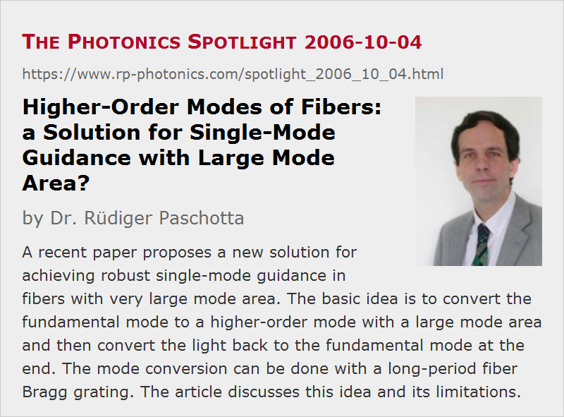

Higher-Order Modes of Fibers: a Solution for Single-Mode Guidance with Large Mode Area?
Posted on 2006-10-04 (revised on 2007-03-10) as a part of the Photonics Spotlight (available as e-mail newsletter!)
Permanent link: https://www.rp-photonics.com/spotlight_2006_10_04.html
Author: Dr. Rüdiger Paschotta, RP Photonics Consulting GmbH
Abstract: A recent paper proposes a new solution for achieving robust single-mode guidance in fibers with very large mode area. The basic idea is to convert the fundamental mode to a higher-order mode with a large mode area and then convert the light back to the fundamental mode at the end. The mode conversion can be done with a long-period fiber Bragg grating. The article discusses this idea and its limitations.

Ref.: S. Ramachandran et al., “Light propagation with ultralarge modal areas in optical fibers”, Opt. Lett. 31 (12), 1797 (2006); J. M. Fini and S. Ramachandran, “Natural bend-distortion immunity of higher-order-mode large-mode-area fibers”, Opt. Lett. 32 (7), 748 (2007); encyclopedia articles on large mode area fibers, effective mode area, power scaling of lasers, high power fiber lasers and amplifiers
The recent enormous performance enhancement of high power fiber lasers and amplifiers have been accompanied by substantial increases of the optical intensities in the fiber core, now reaching levels which introduce problems with fiber nonlinearities or even optical damage. Therefore, it is of high interest to develop fibers with very large effective mode area, which nevertheless offer single-mode guidance and therefore allow for high beam quality of the output. The conventional approach of simply lowering the numerical aperture cannot provide further progress, since this method makes the guidance very weak, so that fibers become very sensitive to bend losses. Therefore, new methods are of high technological interest.
An interesting concept has recently been proposed (Ramachandran 2006, see above). The basic idea is to first couple light from the fundamental mode to a particular higher-order mode, using a long-period fiber Bragg grating, then to propagate the light in this higher order mode in the amplifying fiber, and then to convert the light back to the fundamental mode with another fiber Bragg grating. This sounds complicated, but is not necessarily impractical: the losses associated with coupling to and from the higher-order mode can be rather small, and the fiber design can be optimized for a broad bandwidth for this coupling.
The claimed advantage of using a higher-order mode is twofold: such modes have larger effective mode areas, and they are claimed to exhibit a weaker coupling to other modes. Therefore, mode areas of several thousand micrometers squared and still manageable bend loss may be feasible. In a later paper (Fini 2007), it was also shown that the effective mode area of a higher-order modes is less strongly reduced by bending the fiber, compared with lower-order modes. Also, the issue of coupling to other modes has been addressed more in depth, and the theoretical claims have been supplemented with interesting experimental demonstrations. However, there are still several reasons for concern. Difficulties can arise from the very uneven intensity distribution; this can lead to fiber damage even in a regime where the overall nonlinearity is moderately strong Therefore, this approach may solve problems with nonlinearities but not those with damage. Also, the mode field significantly extends into the cladding (the inner cladding in the case of a double-clad fiber), which is not ideal for amplification.
This article is a posting of the Photonics Spotlight, authored by Dr. Rüdiger Paschotta. You may link to this page and cite it, because its location is permanent. See also the RP Photonics Encyclopedia.
Note that you can also receive the articles in the form of a newsletter or with an RSS feed.
Questions and Comments from Users
Here you can submit questions and comments. As far as they get accepted by the author, they will appear above this paragraph together with the author’s answer. The author will decide on acceptance based on certain criteria. Essentially, the issue must be of sufficiently broad interest.
Please do not enter personal data here; we would otherwise delete it soon. (See also our privacy declaration.) If you wish to receive personal feedback or consultancy from the author, please contact him e.g. via e-mail.
By submitting the information, you give your consent to the potential publication of your inputs on our website according to our rules. (If you later retract your consent, we will delete those inputs.) As your inputs are first reviewed by the author, they may be published with some delay.
|  |
If you like this page, please share the link with your friends and colleagues, e.g. via social media:
These sharing buttons are implemented in a privacy-friendly way!